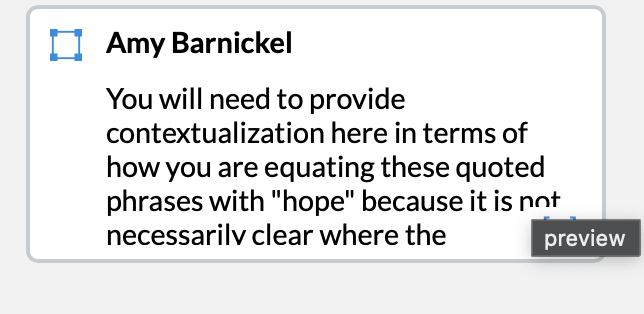
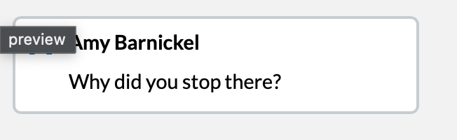

Primary Research
Data Coding Assignment
Framing Statement
This page shows my primary research data coding. I studied three Christian devotional websites, one for each decade, and coded each homepage for hope-based words and phrases. I counted 39 hope-based items total: 5 on Our Daily Bread Ministries (2000s), 17 on YouVersion / Bible.com (2010s), and 17 on She Reads Truth (2020s).
Why This Artifact Shows the Outcomes
This artifact shows Contributing Knowledge because the cross-decade pattern I found came from my own coded data, not from a scholarly source. None of my scholarly sources had named this pattern. The flavor of hope-based language shifts from faith growth (2000s), to emotional support (2010s), to community and daily habit (2020s). This artifact also shows Generating Inquiry because the coding step is where my inquiry paid off. By looking closely at my own data, I found something I did not predict at the start.
Document Versions
- ↓ Final VersionFull coding of Data Point 1 across all three sites.
Instructor Feedback
Comments from Prof. Amy Barnickel (Canvas)


How I Revised
Following Prof. Barnickel's feedback, I added clear contextualization that explains how and why I am equating specific quoted phrases with “hope,” so my coding criteria are explicit rather than assumed. I also went back and finished coding each homepage instead of stopping early, so the counts reflect a complete pass of the visible hope-based language on each site.